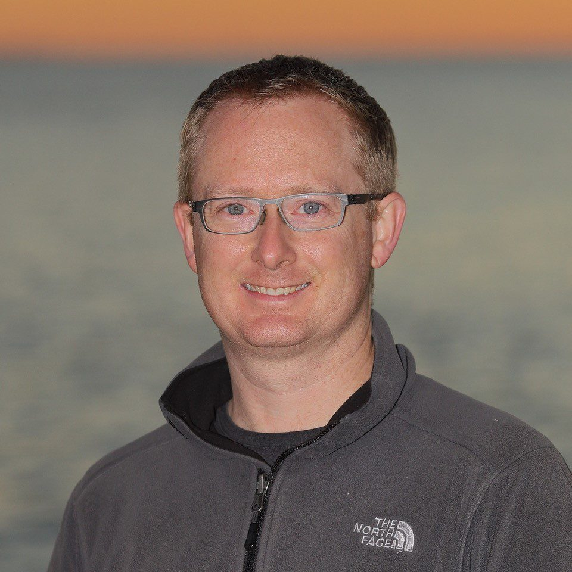

Global Coordination of Underwater Glider Observations
OceanGliders is an international network of underwater glider operators, scientists, and data managers working within the Global Ocean Observing System (GOOS).
The network coordinates sustained ocean observations using autonomous underwater gliders to monitor physical, biogeochemical, and ecosystem processes globally.
OceanGliders is currently strengthening governance, data management, mission coordination, and metadata interoperability while supporting global expansion of sustained glider observations.

Woods Hole Oceanographic Institution (WHOI, USA). Supports OceanGliders governance, observing strategy, and international coordination.
National Oceanography Centre (NOC, UK). Leads community coordination and network development activities.
OceanOPS / WMO. Coordinates technical implementation, monitoring, metadata workflows, and international collaboration.